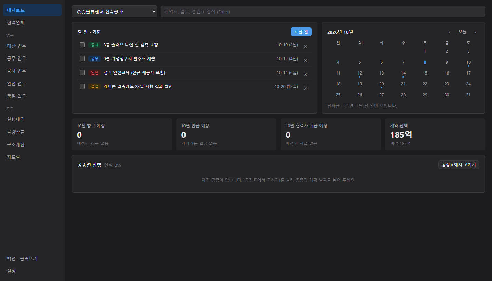
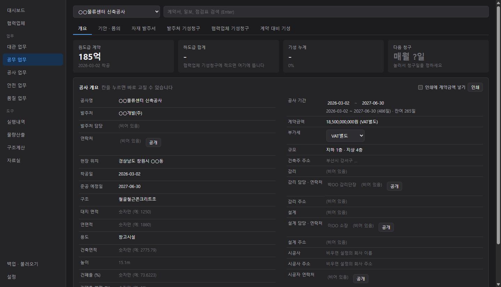
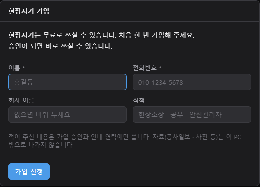

현장 부장이 실제 현장에서 매일 쓰면서 고쳐 온 프로그램입니다.
공사 개요, 기안 · 품의서, 자재 발주서, 발주처 기성청구, 협력업체 기성청구, 계약 대비 기성
문서 · 공문 접수 · 발송 대장, 설계 변경
공사일보(사진 대지 포함), 검측 요청, 공정표, 도면 관리
일일 안전점검, 위험성평가, 안전교육 일지, 안전관리비 사용내역
시험 · 검사, 부적합 · 재시공, 자재 · 입출고(수불부)
실행내역, 물량산출, 구조계산(비계 · 동바리 · 데크 등), 자료실
서류는 은행 · 발주처 · 감리에 실제로 냅니다. 서류 꼴이 안 나면 못 씁니다.
줄이 늘어도 종이를 넘지 않고, 남으면 빈 줄로 채워 아래가 비지 않습니다. 손으로 적어 넣을 자리가 됩니다.
결재란 · 회사 이름 · 사진 대지까지 서류 꼴 그대로. 인쇄도, PDF 저장도 단추 하나.
사진까지 내 PC 의 자료 파일 하나에. 백업은 폴더 하나에 늘 최신으로 덮어씁니다.
고친 판이 나오면 프로그램을 껐다 켤 때 저절로 깔립니다. 다시 받을 일이 없습니다.

그림 속 현장 이름은 보기용입니다.
무료입니다. 윈도우 10 · 11 PC 에서 씁니다.

10분이면 첫 현장을 만들 수 있습니다.
프로그램을 껐다 켜면 저절로 새 판이 깔립니다.
쓰다가 막히는 곳, 이런 서류도 있었으면 하는 것 — 여기 남겨 주세요. 답을 달면 아래에 함께 올라갑니다.